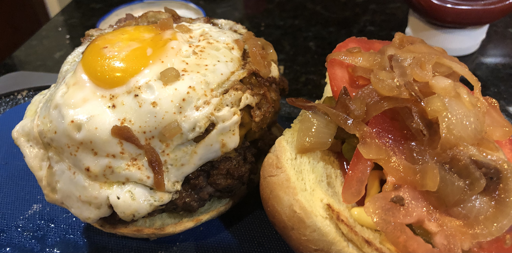

Cooking Documentary
I began cooking frequently on my own when I started living off campus at Virginia Tech and been enjoying the results. I like to cook more than just this awesome looking burger here. I also like to cook:
- Spring rolls
- Beef stew
- Honey garlic chicken
- BBQ Meats (ribs, pullpork, chicken)
- Steak (medium rare)